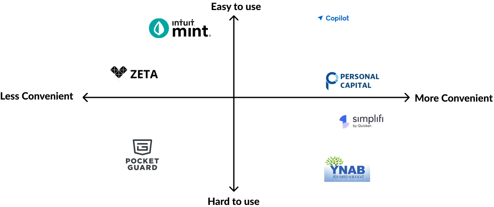
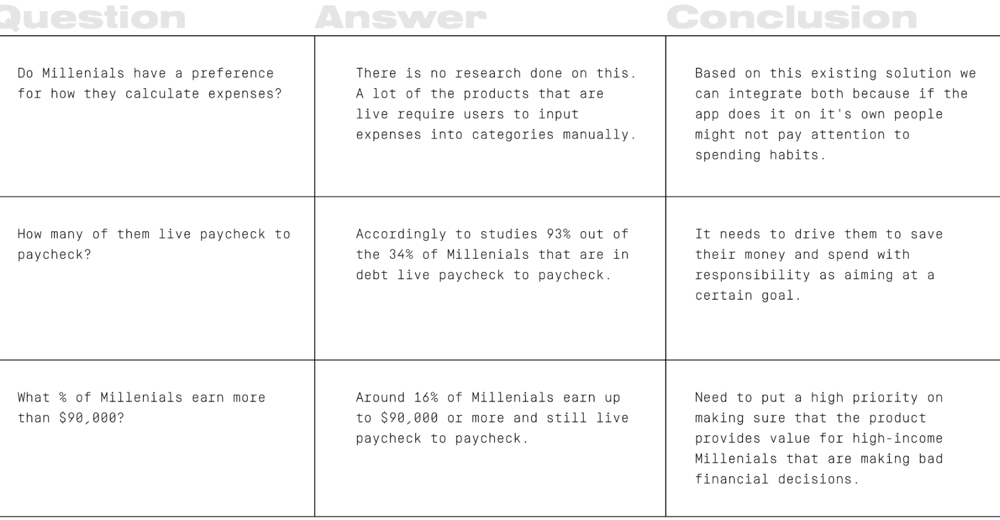
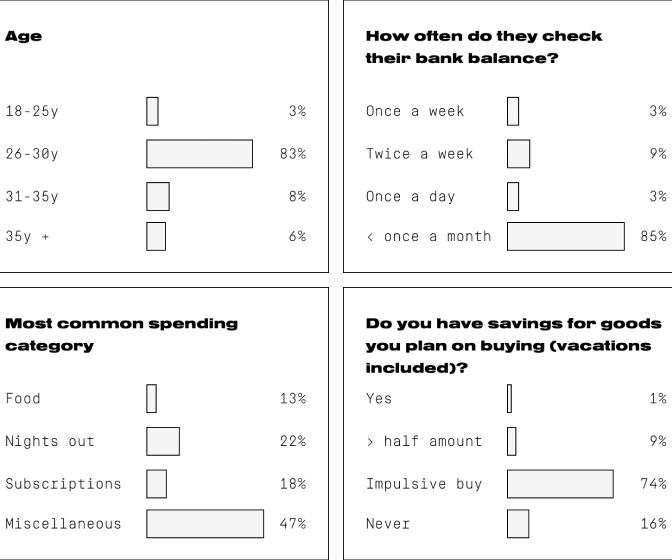
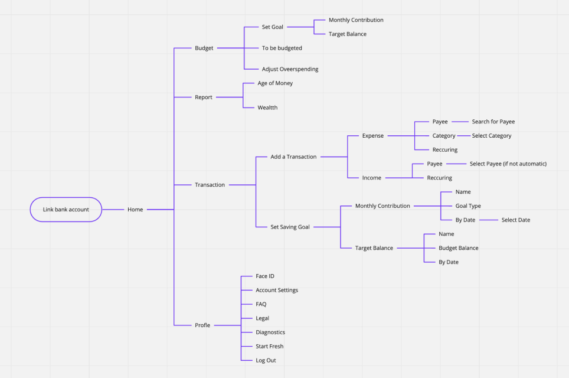
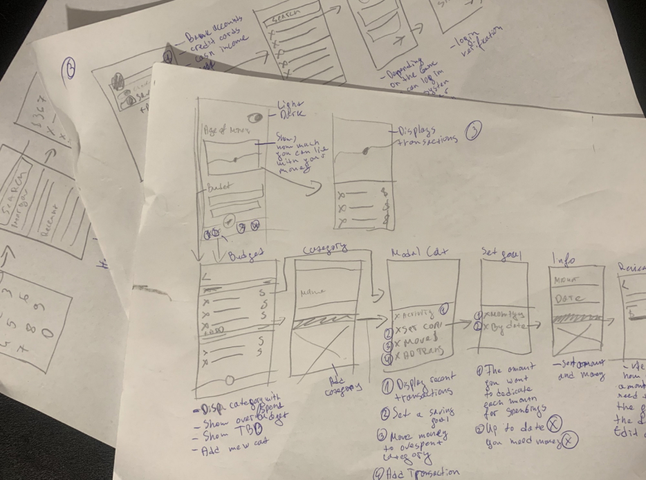
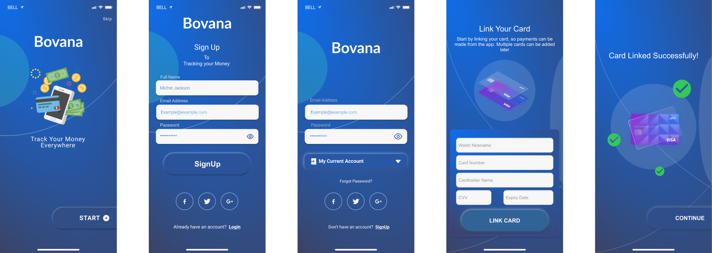
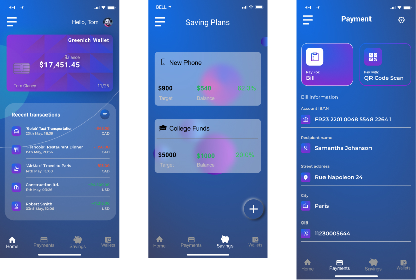
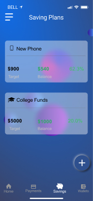
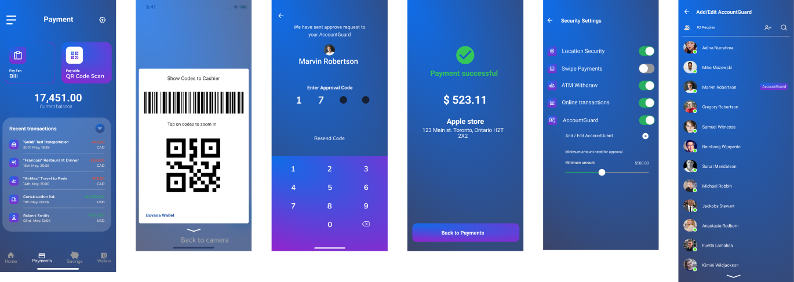
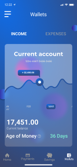

A debit-driven society (user research)
Too many millennials who carry debt don't know how spend it.
A survey ran by Northwestern Mutual comprised 503 Gen Zers, 672
millennials, 595 Gen Xers, and 441 baby boomers. On average,
millennials who carry debt report owing to a total of $27,900
(excluding mortgages), slightly less than baby boomers and about
$8,000 less than the average amount Gen Xers owe. 34% of Americans
don’t know how much of their monthly income goes toward paying down
their personal debt.
Debit is a struggle even for wealthy millennials
Making reference to a random twitter survey and google forms. The
survey had more than 1000 participant. From this survey, about
60%people don’t create budgets for their spending, 50% belong to
impulsively-purchasing.
Some insights from the survey:
-
It is safe to continue with the designing the solution to this
issue.
-
Users budgeting are very flexible. Some create budgets for their
weekly spending. Some others create budgets for their monthly
spending
-
Those who budget do so for financial discipline and to understand
how they spend their money.
-
Some users save a portion of their income and divert the other
portion to cater for their expenses.
Here is a list of the problems after prioritization:
- Inability to keep track of spending.
- Excessive spending on a particular expense.
- Lack of proper financial knowledge.
- Lack of access to previous financial records.
- Overly manual or stressful means of budgeting.
Based on data and feedback we collected we decided to state an
hypothesis that there might be decrease irrational purchase if there
were a better and easier way of preventing impulsive buying
Team
Duration: One Month
3 Designers & Researchers
My role
Lead ux designer and frontend developer in this project, led the
design and discovery phase of this project, conducted all of the
user interviews and user tests. I led efforts to evolve the
service and address customer pain-points related to spending and
planning experiences.
Competitive Analysis

I researched apps related to finances, budget and habit-building and
I end up with 7 apps. Then I filtered the ones related to financial
management as they could be the main competitors. At this point and
I was looking for their current features, and the overall experience
using some of them. Here are some features I found related to the
opportunities of the research:
- 2 of the 7 apps sync bank accounts automatically;
-
1 of the 7 reads SMS from the bank and add as a transaction — the
person has to copy the message and add in the app;
- 4 of the 7 send notifications;
-
7 of the 7 apps use charts to illustrate some expenses and
transactions.
Some insights from competitor analysis:
-
A good number of the apps favor app interaction in portrait mode.
- The apps have easily digestible financial reports.
- The apps all had simple and clean design.
Market Positioning
After the initial interviews and personas that I created, I set off
to figure out the market position for the product. The goal after
talking with everybody from users to stakeholders is the app to be
easy to use and convenient.
Survey Questions
The purpose of these questions is to gain insight into key data and
see if there is available information that would answer the
questions. There was no relevant information around the topics of
interest so I went about creating a survey to gather some real-world
data.

Survey results
I created a google form and send it out to people in our contact
list. The survey was filled by 197 people.

Empathy
I set off to learn about how do people actually spend— especially
why do we have so many tools at our disposal and still people are
terrible at spendings. 100% of the users are real people, focused on
the mindset they shared with me I created two separate user personas
based on my assumptions after the interviews.
Accountable as a solution
After identifying the needs, problems and frustration of the
possible users, I tried to solve them and introduce the necessary
features to meet the users’ needs.
- Features of Accountable
- Cash inflow and cash outflow access
- Financial reports
- Flexible budget creation
- Bank accounts management
- Subscription management
- Funds categorization
- Expected characteristics of accountable
- Easily digestible reports
- Easy to use
- Simple design
- Conventional and less formal tone
- Possibility of access to previous financial reports
Site Map

Early Sketches
We usually start the design process with low fidelity sketches. In
this time, we started to test the demo site searching for pain
points. After we analysed what users got confused from, we took
these insights and made some sketches on paper. Later, we propose UI
by Look & Feel pages. When our client chose the preferred one, we
started to built up the high fidelity prototype using Sketch. We
iterated after every user test and that is how we got our final
desktop screens. The last part was to interpret bigger screens into
smaller phone screens.

Usability Testing
Being the creep I am, I gave few people phone with the prototype
on it and whispered into their ear while looking over their
shoulders 3 questions
This below is the script I had prepared for the session.
Hey [name]. thanks for taking the time. I was telling you about
the app I am working on, and now would need to test a prototype
with you, it shouldn't take more than 15–30 minutes of your
time. I’ll ask you to complete just three tasks and that’s all
-
You have received $890 in cash instead of in your bank
account. You need to add it into your money to be budgeted,
how would you do that?
-
Let’s say we need that money to be added to category RENT.
Let’s add $500 and $90 to electricity. The rest $300 you add
to Groceries. How would you do that?
-
The last one is very simple. You have overspent on a category
called Eating out. How would you move $57 from Rent to Earing
out?
Thank you very much! You really helped me a lot! It is important
for me to receive feedback early on and to try to validate my
assumptions.
Summary
My goal was to validate if Millenials really understood how to
operate with their money and plan accordingly. I was excited about
this idea so a reality check was much needed.
Outcome:
-
All participants managed to add the money to be budgeted.
- All of the participants managed to pass the 3 tasks.
-
Around half of the users got a little bit stuck about
converting money from one category to another.
Final UI which I did
I tried to focus on features related to solving some of the major
desired outcomes found in the initial research. The app should be
simple and easy to understand. Also, encouraging them to build
financial habits. Here are the highlighted features:
- Link Accounts
-
Ease of adding accounts to give you a clear overview right away
-
The ease of adding a bank account and credit card is vital for the
success of this product. If somehow your bank doesn’t allow to
login and gets statements you can always add your finances
manually on a later stage.

Main function page


Set Goals
Monthly Contribution
Target Balance
The purpose of this is to achieve goals easier. By setting goals
with a monthly contribution you will have an automatic payment
to that “bucket” every single month. When you set the payment to
Target Balance it’s free, however, you can set deadlines by
which date you want to achieve that.
Payment method
If the payment over the limit which set in security setting, system
will send approval request to your accountguard, the app will
continue payment process if you have approval code, why we add
barrier in the process, because we hope user can stop and thinking,
then to avoid impulsively-purchasing.

Provide Age of money information to help user understand personal
financial health

Main learnings
Know your audience – Paying and giving credit card details makes
users suspicious. Even under safe conditions, sometimes a bunch of
lock icons (🔒) really helps make them truly believe you. :) Also,
copy factors very highly here, which takes us to the next point.
…and how to talk to them (Improve your writing skills) – As
mentioned, copywriting makes up an important element of UX. We need
to improve not just the visual but the written communication skills
too.